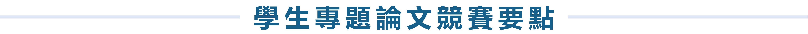

目的
為培養學生從事人因工程研究之獨立思考態度與解決問題能力、提升論文寫作品質並加強英文口語表達訓練，特訂定本競賽辦法。
辦理單位
- 主辦單位：中華民國人因工程學會、南臺學校財團法人南臺科技大學
- 協辦單位：科技部工程技術研究發展司工程科技推展中心、科技部工業工程與管理學門、國家中山科學研究院、財團法人醫院評鑑暨醫療品質策進會、勞動部勞動及職業安全衛生研究所、國立高雄科技大學資訊管理系、國立高雄科技大學工業工程與管理系
參賽條件
- 全國大專院校學生及研究生均可組隊參加，本國籍參賽學生與於國內大專院校就讀之外籍學生，須目前在國內大專院校註冊並有學籍，或畢業未滿一年；參賽學生須於報名時提供有效學生身分證明文件，或畢業未滿一年之畢業證書。
- 每隊人數以 5 人以內為限，每團隊須有指導老師至少 1 人(填寫附件一)，指導教授不限指導一組團隊，但每位學生最多僅能報名參加一團隊。團隊中至少一位學生須為中華民國人因工程學會有效之學生會員。
- 參賽論文內容必須於參賽學生就學期間內完成，並由參賽學生親自撰寫。
- 參賽論文的第一作者需為參賽學生(指導老師可同時列名)。
- 參賽論文可選擇中、英文撰寫，但於學生專題論文口試競賽當天需以英語進行口頭報告。
報名與投稿方式
- 參賽學生必須透過第二十九屆中華民國人因工程學會年會暨學術研討會(以下簡稱本次大會)線上註冊系統報名，並於報名時註明「參加學生論文競賽」及繳交報名費後完成報名。
- 投稿參賽論文請連結EST2022 CMT投稿系統。
- 第一次使用CMT系統者請先註冊並填寫資料，請參考註冊說明頁面。已於CMT系統註冊者可用原本帳號與密碼登入。
- 登入投稿系統後，請確認右上角在您姓名左側出現「EST2022」，接著按下「+ Create new submission」選擇「Submission-Student competition」進行投稿。投稿步驟如下：
-
(1) 填寫論文標題(Title)及摘要(Abstract)。
(2) 建立共同作者(Authors)。
(3) 上傳投稿文件pdf檔。格式與頁數均依照本次大會論文全文要求，並於上傳時將以下文件依序合併為一個 pdf 檔案後上傳，檔案以不超過 10MB 為原則。
• 論文指導老師推薦書（附件一）
• 論文全文（參考格式）
• 有效學生身分證明文件（或畢業未滿一年之畢業證書）
• 學會會員資格證明（證書或繳費收據）
(4) 點選繳交(Submit)。 - 完成報名與投稿程序之論文經初審完畢後，將於本次大會網站公告入圍名單與口試競賽時程，並依據報名資料以電子郵件方式分別通知參賽學生。
重要日期與時間
| 2022年01月14日(五) 2022年01月24日(一) |
 |
參賽投稿截止 |
| 2022年01月28日(五) | |
公告決選名單 |
| 2022年03月04日(五) | |
報名費繳費截止日 |
| 2022年03月11日(五) | |
競賽決選 (假南臺科技大學舉行) |
| 2022年03月12日(六) | |
頒獎典禮 (假南臺科技大學舉行) |
評審方式
- 由本學會邀請專家學者組成評審小組進行評選。
- 參賽論文評分包含「書面論文」與「口頭發表」兩個部份，評分要點如下：
| 書面論文 | 口頭發表 |
|---|---|
|
|
獎勵
- 分為大學生組及研究生組各別競賽。若為大學生與研究生組隊參賽者，亦視為研究生組。
- 視報名人數與參賽論文品質，由各組所有決賽論文中，分別選出以下獎項：
-
• 第一名：獎狀乙紙，獎金新台幣 5,000 元。
• 第二名：獎狀乙紙，獎金新台幣 4,000 元。
• 第三名：獎狀乙紙，獎金新台幣 3,000 元。
• 佳作：獎狀乙紙，數名。 - 未獲獎之其他入圍決選之參賽學生，皆頒發入圍決選證明以茲鼓勵。
- 本屆競賽結果將於決賽當日公布並舉行頒獎儀式。
注意事項
- 本大會將擇優隊伍進入決賽，未進入決選之學生論文推薦納入本屆研討會之口頭報告或海報展示。
- 為鼓勵參加同學的努力以及用心，入圍隊伍之競賽得獎文章，由主辦單位推薦投稿至人因工程學刊。
- 參賽作品不得抄襲任何已發表或未經發表之研究報告及數據，如經他人檢舉並查證屬實者，除追回原授與之各項獎勵外，並依相關規定提交懲處。
- 競賽及頒獎方式將會視疫情狀況調整。
其他
學生專題論文口試競賽報告時，將開放本次大會參與者觀摩。凡本辦法未盡事項及任何臨時狀況，概依評審小組決議行之。